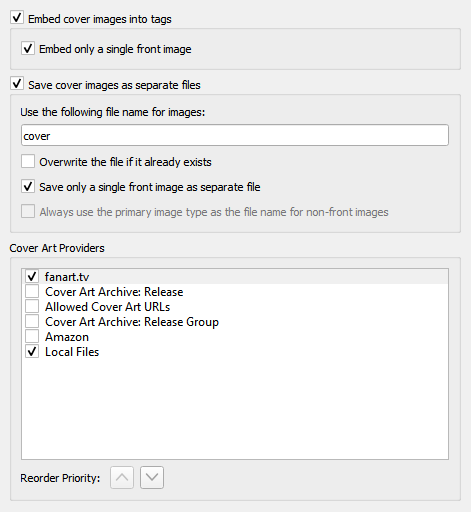

Location
{kind=link}
Embed cover images into tags
Enables images to be embedded directly into your music files. While this will use more storage space than storing it as a separate image file in the same directory, some music players will only display embedded images and don’t find the separate files.
Embed only a single front image
Embeds only a single front image into your music files. No other images, regardless of their type, will be embedded. Many music players will only display a single embedded image, so embedding additional images may not add any functionality.
Save cover images as separate files
In the file name mask you can use any variable or function from Picard Tags and Picard Scripting Functions. The mask should not contain a file extension; this is added automatically based on the actual image type. The default value is “cover”. If you change this to “folder”, Windows will display the image as a preview of the containing directory.
In addition to scripting variables already available for a track, you can use the following cover art specific variables:
coverart_maintype: The primary type (e.g.: front, medium, booklet). For front images this will always be “front”.
coverart_types: Full list of all types assigned to this image.
coverart_comment: The cover art comment.For example, specifying a file naming mask such as:
%albumartist% - %originalyear% - %album% - %coverart_maintype%will preface the file name with the album artist, original release year and album title.
You can also have Picard save the images to a subdirectory by including this in the file naming mask. For example:
Artwork/%albumartist% - %originalyear% - %album% - %coverart_maintype%which will place the images in a subdirectory called “Artwork”.
Overwrite the file if it already exists
Check this to replace existing files. This is especially recommended if trying to write “folder” previews for Windows.
Save only a single front image as separate file
This tells Picard to only save the first “front” image to a separate file with the release. No other “front” images or images of any other type will be saved. If left unchecked, all “front” images will be saved as separate files, along with any other specified image types to be downloaded.
Always use the primary image type as the file name for non-front images
This setting changes how Picard names image files other than front images.
When checked, Picard will use the type of the image (e.g.: back, booklet, etc.) as the filename when saving, as long as the type is not front. If the image has been assigned multiple types, then the first type will be used. For example, if the image is of types “back” and “raw”, then “back” will be used for the filename. If unchecked or if the image is of type “front”, Picard will use the file name specified in the “Use the following file name for images” setting.